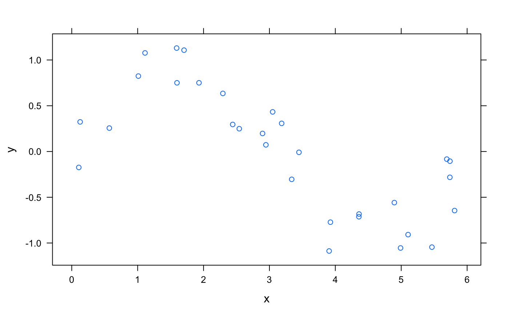
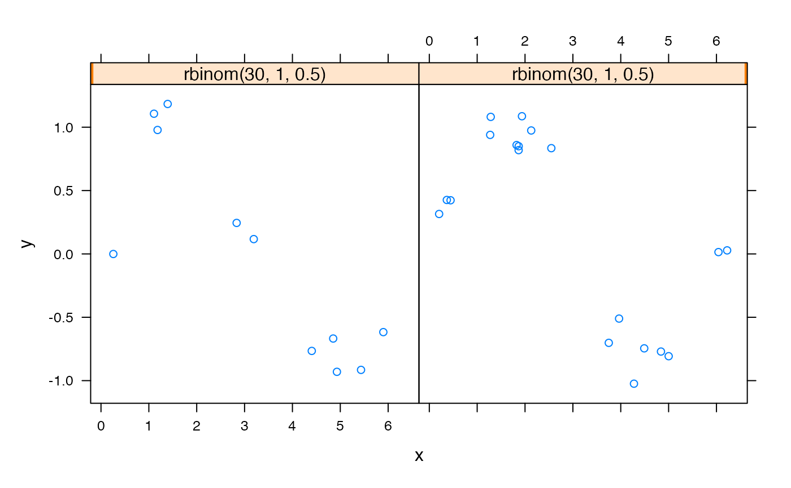
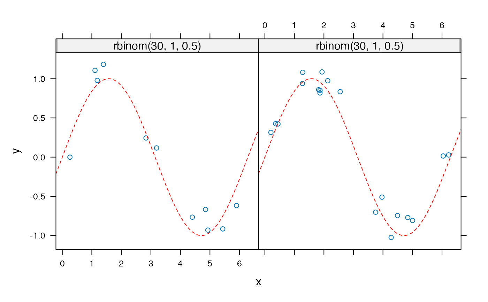

Panel function for plotting functions
panel.plotFun1( ..f.., ..., x, y, type = "l", lwd = trellis.par.get("superpose.line")$lwd, lty = trellis.par.get("superpose.line")$lty, col = trellis.par.get("superpose.line")$col, npts = NULL, zlab = NULL, filled = TRUE, levels = NULL, nlevels = 10, surface = FALSE, alpha = NULL, discontinuity = NULL, discontinuities = NULL )
Arguments
| ..f.. | an object (e.g., a formula) describing a function |
|---|---|
| ... | additional arguments, typically processed by lwdline width ltyline type cola color |
| x, y | ignored, but there for compatibility with other lattice panel functions |
| type | type of plot ( |
| lwd | width of the line |
| lty | line type |
| col | a vector of colors |
| npts | an integer giving the number of points (in each dimension) to sample the function |
| zlab | label for z axis (when in surface-plot mode) |
| filled | fill with color between the contours ( |
| levels | levels at which to draw contours |
| nlevels | number of contours to draw (if |
| surface | a logical indicating whether to draw a surface plot rather than a contour plot |
| alpha | number from 0 (transparent) to 1 (opaque) for the fill colors |
| discontinuity | a positive number determining how sensitive the plot is to
potential discontinuity. Larger values result in less sensitivity. The default is 1.
Use |
| discontinuities | a vector of input values at which a function is
discontinuous or |
See also
plotFun
Examples
x <- runif(30,0,2*pi) d <- data.frame( x = x, y = sin(x) + rnorm(30,sd=.2) ) xyplot( y ~ x, data=d )